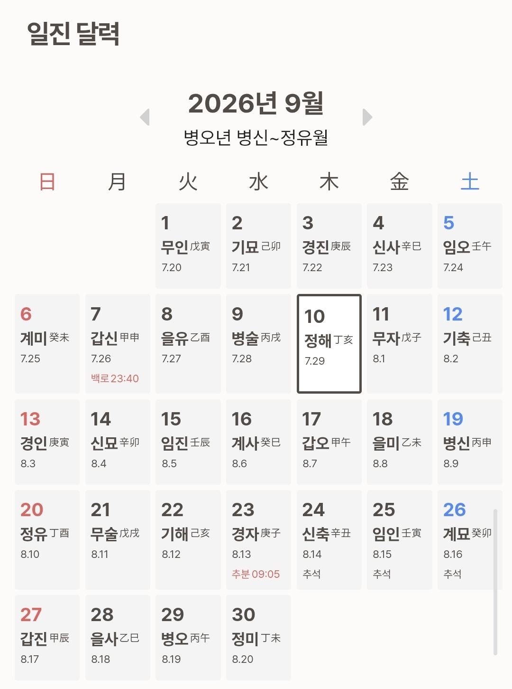

1.내 업무, AI에 맡길 것 / 직접 할 것 / 자동화할 것
오늘 또는 평소 하는 업무를 맨 아래 [나의 하루 업무]에 적어 넣고 보내세요.
당신은 업무 효율화와 AI 활용을 돕는 업무 분석가입니다.
제가 오늘 또는 평소에 하는 업무를 아래에 적겠습니다.
각 업무를 분석해서 다음 3가지로 분류해주세요.
1. AI에 맡길 것
- 글쓰기, 요약, 정리, 초안 작성, 아이디어 제안, 자료 비교, 데이터 정리처럼 생성형 AI를 활용하면 시간을 줄일 수 있는 업무
- 사람이 최종 확인하면 되는 업무
2. 내가 직접 해야 할 것
- 최종 의사결정, 대면 소통, 관계 형성, 책임이 필요한 판단, 현장 대응 등 사람이 직접 해야 하는 업무
- AI가 보조할 수 있다면 어떤 부분을 보조할 수 있는지도 알려주세요.
3. 자동화 가능한 것
- 반복적으로 발생하고 일정한 규칙이 있는 업무
- 예약, 알림, 자료 수집, 파일 정리, 반복 입력, 정기 보고 등 자동화 도구나 AI 에이전트를 활용할 수 있는 업무
각 업무마다 아래 내용을 함께 분석해주세요.
- 현재 업무
- 분류: AI에 맡길 것 / 내가 해야 할 것 / 자동화 가능한 것
- 그렇게 판단한 이유
- AI를 활용한다면 구체적으로 무엇을 맡길 수 있는지
- 사용할 수 있는 도구나 기능의 예
- 예상되는 시간 절감 정도: 낮음 / 중간 / 높음
결과는 한눈에 볼 수 있도록 표로 정리해주세요.
마지막에는 전체 업무를 다시 살펴보고 다음을 알려주세요.
① 가장 먼저 AI에 맡기면 좋은 업무 TOP 3
② 자동화하면 효과가 큰 반복 업무 TOP 3
③ 굳이 AI를 사용하지 않는 것이 좋은 업무
④ 현재 업무 방식에서 가장 시간이 낭비되고 있는 부분
⑤ 내가 이번 주부터 바로 바꿔볼 수 있는 업무 방식 3가지
중요한 것은 모든 업무에 억지로 AI를 적용하는 것이 아닙니다.
AI를 사용하는 시간보다 직접 하는 것이 더 빠른 업무는 그대로 두고,
실제로 시간과 반복 작업을 줄일 수 있는 업무를 우선적으로 찾아주세요.
[나의 하루 업무]
-
-
-
-
-
2.나만 쓰는 AI 요청 템플릿 5개 만들기
1번 결과를 보고 나서 쓰면 더 정확합니다. [나의 정보]를 채워 보내세요.
당신은 제 업무를 이해하고 반복 업무를 줄여주는 개인 AI 비서 설계자입니다.
제가 하는 일과 자주 반복하는 업무를 아래에 적겠습니다.
이 내용을 바탕으로 제가 ChatGPT나 생성형 AI를 사용할 때 자주 복사해서 사용할 수 있는
실전 요청 템플릿 5개를 만들어주세요.
[나의 정보]
- 직업 / 역할:
- 주요 업무:
- 자주 만나는 고객 또는 대상:
- 반복해서 하는 업무:
- 자주 작성하는 문서나 콘텐츠:
- 업무할 때 중요하게 생각하는 기준:
- AI가 도와줬으면 하는 일:
- AI에게 맡기고 싶지 않은 일:
아래 기준으로 분석해주세요.
먼저 제 업무에서 AI를 반복적으로 활용하면 시간을 줄일 수 있는 업무를 찾아주세요.
그중 활용도가 높은 업무 5개를 선정하고, 각각 바로 사용할 수 있는 요청 템플릿으로 만들어주세요.
각 템플릿에는 다음 내용이 포함되어야 합니다.
1. 이 템플릿을 사용하는 상황
2. AI에게 맡길 역할
3. 내가 입력해야 할 정보
4. AI에게 요청할 구체적인 작업
5. 결과물의 형식
6. 주의하거나 확인해야 할 부분
템플릿은 아래처럼 만들어주세요.
---
템플릿 1. [템플릿 이름]
언제 사용하면 좋은지
간단한 설명
복사해서 사용하는 요청문
당신은 [역할]입니다.
제가 아래 정보를 제공하겠습니다.
[입력할 정보]
-
-
이 내용을 바탕으로 다음 작업을 해주세요.
[해야 할 작업]
-
-
결과는 [표 / 보고서 / 이메일 / 게시글 / 목록 / 요약문 등] 형태로 작성해주세요.
추가 조건:
-
-
---
같은 방식으로 총 5개를 만들어주세요.
템플릿은 너무 추상적으로 만들지 말고, 제가 실제 업무 중 바로 복사해서 사용할 수 있을 정도로 구체적으로 작성해주세요.
"자료를 정리해주세요", "글을 써주세요"처럼 범용적인 요청보다는 제 직업과 반복 업무에 맞춰 만들어주세요.
가능하면 아래 영역이 골고루 포함되도록 구성해주세요.
- 문서 작성 또는 정리
- 고객·대상자 커뮤니케이션
- 아이디어 또는 기획
- 반복 행정 업무
- 검토·수정·피드백
마지막에는 별도로 정리해주세요.
① 제가 AI 비서를 가장 자주 사용할 것으로 예상되는 업무 TOP 3
② 매번 입력하지 않고 기본 설정으로 정해두면 좋은 정보
③ AI에게 맡기기보다 제가 직접 판단해야 하는 업무
④ 앞으로 추가로 만들어두면 좋은 AI 요청 템플릿 5가지
3.AI 맞춤 사주 보기
쉬어가는 실습입니다. 같은 방식(정보 + 이미지 + 프롬프트)으로 AI를 쓰는 연습이 됩니다.
순서
- 아래 만세력 열기에서 생년월일을 입력하고, 나온 내용을 복사
- ChatGPT(또는 쓰시는 AI)에 붙여넣고, 일진 달력 이미지를 함께 업로드
- 아래 프롬프트를 복사해 이어서 보내기
- 성격적 강점·직업 커리어를 먼저 물어보고, 이어서 2026년 9월 금전운·건강운 등 궁금한 것을 질문
{kind=link}

당신은 사주명리의 기본 원리를 바탕으로 성향과 흐름을 해석하는 상담가입니다.
붙여넣은 제 정보를 바탕으로 사주를 분석해주세요.
먼저 전체적인 사주를 바탕으로 다음 내용을 정리해주세요.
1. 나의 기본 성격과 기질
- 평소 어떤 방식으로 생각하고 행동하는지
- 사람들과 관계를 맺는 방식
- 스트레스를 받을 때 나타나는 특징
2. 나의 성격적 강점
- 타고난 강점
- 일을 할 때 잘 발휘되는 능력
- 다른 사람과 비교했을 때 나만의 장점
3. 주의하면 좋은 성향
- 지나치게 강하게 나타날 수 있는 성향
- 인간관계나 업무에서 주의할 점
- 스트레스 관리 시 신경 쓰면 좋은 부분
4. 직업과 커리어
- 나와 잘 맞는 업무 방식
- 잘 맞는 직업이나 분야
- 조직생활 / 프리랜서 / 사업 중 어떤 환경에서 강점이 나타나는지
- 커리어를 발전시킬 때 활용하면 좋은 강점
- 돈을 버는 방식에서 나타나는 특징
5. 인간관계와 소통
- 사람을 대하는 방식
- 잘 맞는 사람의 특징
- 갈등이 생기기 쉬운 상황과 주의점
분석할 때 단순히 "좋다, 나쁘다"라고 표현하지 말고, 왜 그렇게 해석하는지 쉽게 설명해주세요.
전문적인 사주 용어를 사용할 경우에는 일반인이 이해할 수 있도록 함께 풀어서 설명해주세요.
---
그 다음 2026년 전체 흐름과 2026년 9월의 흐름을 분석해주세요.
특히 다음 항목을 각각 정리해주세요.
- 금전운
- 직업·사업운
- 새로운 기회나 변화
- 인간관계운
- 연애운
- 건강과 컨디션 관리
- 공부·자기계발운
각 항목마다
① 좋은 흐름
② 조심하면 좋은 부분
③ 적극적으로 해볼 만한 행동
④ 피하거나 신중하게 판단하면 좋은 행동
을 구분해서 설명해주세요.
마지막에는 2026년 9월에 제가 특히 궁금해하면 좋을 질문 5개를 먼저 제안해주세요.
예를 들면
- 새로운 일을 시작해도 좋은 시기인가?
- 이직이나 사업 확장을 고민해도 되는 시기인가?
- 큰돈을 지출하거나 투자할 때 주의할 점은?
- 인간관계에서 조심해야 할 부분은?
- 컨디션 관리를 위해 신경 써야 할 생활 습관은?
처럼 제가 추가로 질문할 수 있도록 만들어주세요.
사주 해석은 미래를 확정적으로 단정하지 말고, 성향과 시기의 흐름을 참고하는 관점으로 설명해주세요.
건강, 투자, 계약 등 중요한 결정은 사주만을 근거로 판단하지 않도록 구분해서 설명해주세요.